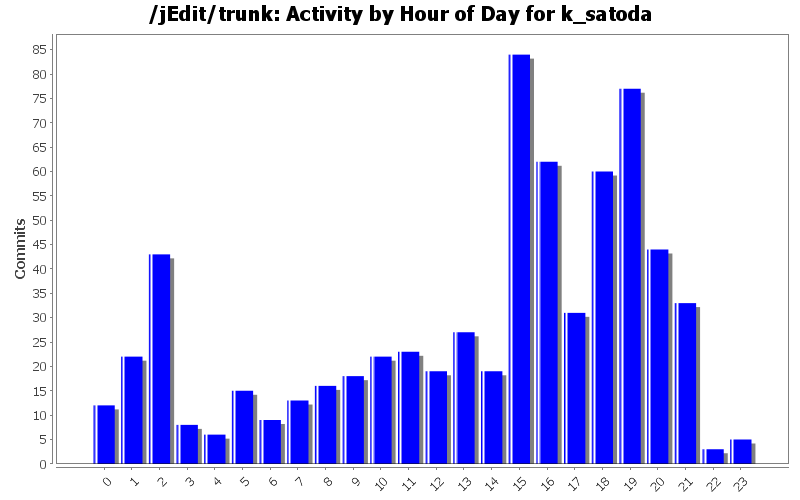
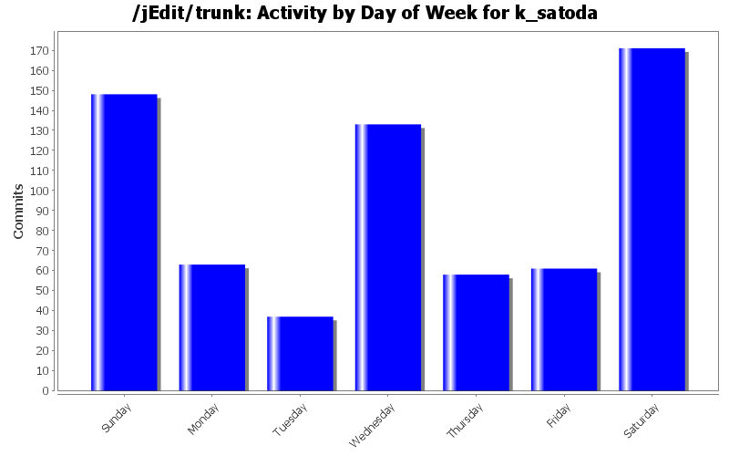
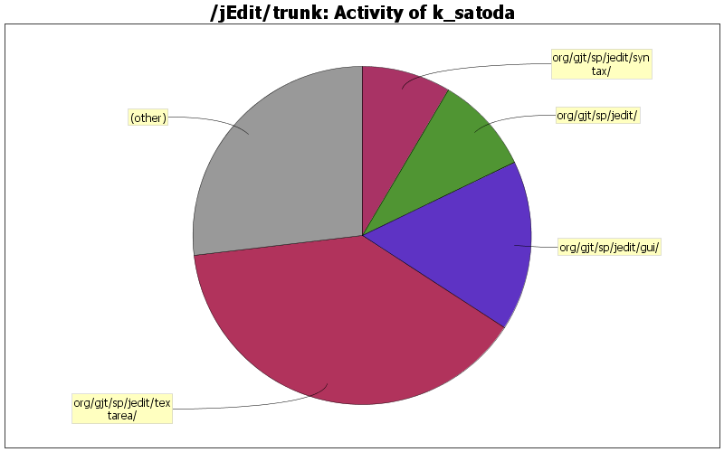

| Directory | Changes | Lines of Code | Lines per Change |
|---|---|---|---|
| Totals | 671 (100.0%) | 18131 (100.0%) | 27.0 |
| org/gjt/sp/jedit/textarea/ | 49 (7.3%) | 7072 (39.0%) | 144.3 |
| org/gjt/sp/jedit/gui/ | 41 (6.1%) | 2940 (16.2%) | 71.7 |
| org/gjt/sp/jedit/ | 136 (20.3%) | 1709 (9.4%) | 12.5 |
| org/gjt/sp/jedit/syntax/ | 50 (7.5%) | 1538 (8.5%) | 30.7 |
| org/gjt/sp/jedit/bufferio/ | 15 (2.2%) | 726 (4.0%) | 48.4 |
| org/gjt/sp/jedit/io/ | 27 (4.0%) | 701 (3.9%) | 25.9 |
| doc/ | 130 (19.4%) | 606 (3.3%) | 4.6 |
| org/gjt/sp/jedit/input/ | 7 (1.0%) | 538 (3.0%) | 76.8 |
| org/gjt/sp/jedit/buffer/ | 35 (5.2%) | 510 (2.8%) | 14.5 |
| org/gjt/sp/jedit/options/ | 11 (1.6%) | 380 (2.1%) | 34.5 |
| org/gjt/sp/jedit/indent/ | 14 (2.1%) | 300 (1.7%) | 21.4 |
| org/gjt/sp/jedit/search/ | 26 (3.9%) | 222 (1.2%) | 8.5 |
| org/gjt/sp/util/ | 13 (1.9%) | 145 (0.8%) | 11.1 |
| package-files/windows/ | 17 (2.5%) | 110 (0.6%) | 6.4 |
| org/gjt/sp/jedit/bufferset/ | 16 (2.4%) | 108 (0.6%) | 6.7 |
| de/masters_of_disaster/ant/tasks/calculatesize/ | 1 (0.1%) | 95 (0.5%) | 95.0 |
| org/gjt/sp/jedit/menu/ | 12 (1.8%) | 86 (0.5%) | 7.1 |
| / | 12 (1.8%) | 86 (0.5%) | 7.1 |
| doc/users-guide/ | 11 (1.6%) | 70 (0.4%) | 6.3 |
| org/gjt/sp/jedit/pluginmgr/ | 1 (0.1%) | 58 (0.3%) | 58.0 |
| modes/ | 11 (1.6%) | 48 (0.3%) | 4.3 |
| macros/Properties/ | 1 (0.1%) | 18 (0.1%) | 18.0 |
| org/gjt/sp/jedit/browser/ | 8 (1.2%) | 15 (0.1%) | 1.8 |
| org/gjt/sp/jedit/gui/statusbar/ | 4 (0.6%) | 13 (0.1%) | 3.2 |
| installer/ | 3 (0.4%) | 11 (0.1%) | 3.6 |
| org/jedit/localization/ | 9 (1.3%) | 10 (0.1%) | 1.1 |
| macros/Java/ | 1 (0.1%) | 6 (0.0%) | 6.0 |
| macros/Files/ | 2 (0.3%) | 5 (0.0%) | 2.5 |
| org/gjt/sp/jedit/bsh/ | 1 (0.1%) | 4 (0.0%) | 4.0 |
| org/gjt/sp/jedit/msg/ | 1 (0.1%) | 1 (0.0%) | 1.0 |
| startup/ | 1 (0.1%) | 0 (0.0%) | 0.0 |
| package-files/os2/ | 1 (0.1%) | 0 (0.0%) | 0.0 |
| package-files/linux/ | 1 (0.1%) | 0 (0.0%) | 0.0 |
| jars/QuickNotepad/ | 1 (0.1%) | 0 (0.0%) | 0.0 |
| jars/MacOS/macos/menu/ | 1 (0.1%) | 0 (0.0%) | 0.0 |
| jars/MacOS/macos/ | 1 (0.1%) | 0 (0.0%) | 0.0 |

Made the flagging of merged entries more clear and avoided use of
not-yet-released version.
10 lines of code changed in 1 file:
In a CompoundEdit compact a sequence of Remove&Insert Edits into a
Replace Edit; further compact consecutive Replace Edits into a
CompressedReplace Edit object. (Patch #3531515 by Thomas Meyer)
212 lines of code changed in 2 files:
Moved a premature call to getLastEdit() in getMergeEdit(). This is a
small cleanup beside the aim of patch #3531515.
1 lines of code changed in 1 file:
Moved reference to UndoManager in each Edit instance to parameters of
undo()/redo() method to lower memory consumption.
16 lines of code changed in 1 file:
More restricted visibility of inner classes of UndoManager to make it
easy to understand the impact of further restructuring will be reasonably
limited.
6 lines of code changed in 1 file:
Dropped the artificial limitation to 1024 chars on expanding the gap
in ContentManager. Now it always use the complete remaining buffer which
is expanded in a geometric progression. This change greatly speeds up
big search&replace-all operations in which case copying in moveGapEnd()
exhibited quadratic operation. Now it is amortized linear.
(Patch #3533838 by Thomas Meyer, tweaked by me)
35 lines of code changed in 2 files:
Avoided unreasonable memory consumption by duplicate String instances
that could be allocated for each occurrence in a big search&replace-all.
(Patch #3528619 by Thomas Meyer)
10 lines of code changed in 2 files:
Removed unnecessary local variables. This is a minor code cleanup part
from patch #3528619 by Thomas Meyer.
2 lines of code changed in 1 file:
Added a post-release task that clean up doc/CHANGES.txt on trunk so that
it keep showing the fact.
Previously, merged changes were removed from the list as a post-merge
task. But it meant getting out of the fact since the base version was
one not released yet.
10 lines of code changed in 2 files:
Reduced code duplication in ContentManager. This is a preparation for
further changes proposed in patch #3533838.
15 lines of code changed in 1 file:
Replaced class UndoManager.RemovedContent with unwrapped String. The
class had became a large memory overhead since removal of its fields
done in r21810-21813. (SF.net patch #3531538)
48 lines of code changed in 2 files:
Removed redundant inKillRing field from UndoManager.RemovedContent. It
seemed to be held for performance, but the time complexity is linear
with or without it. It was rather an overhead about memory and code
complexity. (SF.net patch #3531538)
19 lines of code changed in 2 files:
A small correction of r21811, which accidentally changed a behavior.
(SF.net patch #3531538)
2 lines of code changed in 1 file:
Removed redundant hashCode field from UndoManager.RemovedContent. It
seemed a workaround for a performance problem in a very old JVM
implementation. Now, java.lang.String can cache its hash code in it, and
major JVM implementations do that since over a decade ago.
(SF.net patch #3531538)
7 lines of code changed in 2 files:
Removed redundant length fields from UndoManager.Insert/Remove. They
were always equal to the length of the strings which are held as another
field. (SF.net patch #3531538)
9 lines of code changed in 1 file:
Bumped the trunk version to 5.1 since the release branch for 5.0.x had
been created.
5 lines of code changed in 2 files:
Added missing quotes to show README and CHANGES from Windows installer.
2 lines of code changed in 1 file:
Moved locale specification for javadoc task to be set first so that it
works.
There was a old bug which reported the problem like this and had been
fixed. But it seemed not working at this time.
https://issues.apache.org/bugzilla/show_bug.cgi?id=4984
3 lines of code changed in 1 file:
Moved a note for internal usage in javadoc not to expose internal things
as public API docs. Also fixed invalid links in it.
7 lines of code changed in 1 file:
Fixed a syntax error in Buffer_Switcher.bsh.
This had been broken since r21353.
1 lines of code changed in 1 file:
(307 more)